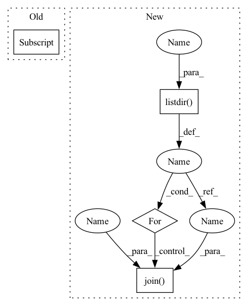

Pattern ID :25337
Before Change
if not (os.path.exists(row[field].strip())):
print(
"\tERROR: The recipe %s does not contain a %s. Please add it!"
% (row[recipe_id_field] , field)
)
check = False
assert checkAfter Change
check = True
// Loop over all recipe CSVs
for recipe_csvfile in os.listdir(recipe_folder ):
if recipe_csvfile in __skip_list:
continue
with open(
os.path.join(recipe_folder , recipe_csvfile ) , newline=""
) as csvf:
reader = csv.DictReader(csvf, delimiter=",", skipinitialspace=True)
for row_id, row in enumerate(reader):In pattern: SUPERPATTERN
Frequency: 3
Non-data size: 4
Instances Fragment ID: 77541188
Project Name: speechbrain/speechbrain
Commit Name: a4857aee6af3d3d0078d93df15a64dce3af3f009
Time: 2023-02-13
Author: laperriere.gaelle@gmail.com
File Name: tests/consistency/test_recipe.py
M Class Name: AnonimousClass
N Class Name: AnonimousClass
M Method Name: test_mandatory_files(2)
N Method Name: test_mandatory_files(3)
M Parent Class:
N Parent Class:
M File Name: tests/consistency/test_recipe.py
N File Name: tests/consistency/test_recipe.py
M Start Line: 100
M End Line: 130
N Start Line: 152
N End Line: 167
Before Change
if not (os.path.exists(row[field].strip())):
print(
"\tERROR: The recipe %s does not contain a %s. Please add it!"
% (row[recipe_id_field] , field)
)
check = False
assert checkAfter Change
check = True
// Loop over all recipe CSVs
for recipe_csvfile in os.listdir( recipe_folder):
with open(
os.path.join( recipe_folder, recipe_csvfile) , newline=""
) as csvf:
reader = csv.DictReader(csvf, delimiter=",", skipinitialspace=True)
for row_id, row in enumerate(reader): Fragment ID: 77541187
Project Name: speechbrain/speechbrain
Commit Name: a65e4c53905c999751ae4b262063a18a13fef7c1
Time: 2022-10-12
Author: 2925439+anautsch@users.noreply.github.com
File Name: tests/consistency/test_recipe.py
M Class Name: AnonimousClass
N Class Name: AnonimousClass
M Method Name: test_mandatory_files(2)
N Method Name: test_mandatory_files(3)
M Parent Class:
N Parent Class:
M File Name: tests/consistency/test_recipe.py
N File Name: tests/consistency/test_recipe.py
M Start Line: 100
M End Line: 130
N Start Line: 131
N End Line: 144
Before Change
self._items = list(self._load_items(path).values())
def _load_categories(self):
self._categories[AnnotationType.label] = LabelCategories()
def _load_items(self, path):
items = {}After Change
class_name = objects[1]
label_cat.add(label, parent=class_name)
else:
subset_path = osp.join(self._dataset_dir, self._subset)
if osp.isdir(subset_path):
for images_dir in sorted(os.listdir( subset_path) ):
if osp.isdir(osp.join( subset_path, images_dir) ):
label_cat.add(images_dir)
return { AnnotationType.label: label_cat }
Fragment ID: 77541186
Project Name: openvinotoolkit/datumaro
Commit Name: c754d7e9e2eb514ff36cd321b1457bdf1bd37d39
Time: 2021-01-17
Author: anastasia.yasakova@intel.com
File Name: datumaro/plugins/vgg_face2_format.py
M Class Name: VggFace2Extractor
N Class Name: VggFace2Extractor
M Method Name: _load_categories(1)
N Method Name: _load_categories(1)
M Parent Class: SourceExtractor
N Parent Class: SourceExtractor
M File Name: datumaro/plugins/vgg_face2_format.py
N File Name: datumaro/plugins/vgg_face2_format.py
M Start Line: 36
M End Line: 36
N Start Line: 37
N End Line: 55